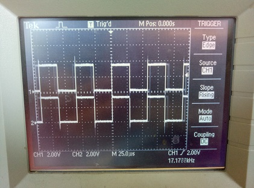

3. Accessing peripherals directly via registers
The ESP32’s peripherals can be controlled via direct register reads and writes. This requires reading the datasheet to know what registers to use and what values to write to them. The following example shows how to turn on and change the prescaler of the MCPWM0 peripheral.
from micropython import const
from machine import mem32
# Define the register addresses that will be used.
DR_REG_DPORT_BASE = const(0x3FF00000)
DPORT_PERIP_CLK_EN_REG = const(DR_REG_DPORT_BASE + 0x0C0)
DPORT_PERIP_RST_EN_REG = const(DR_REG_DPORT_BASE + 0x0C4)
DPORT_PWM0_CLK_EN = const(1 << 17)
MCPWM0 = const(0x3FF5E000)
MCPWM1 = const(0x3FF6C000)
# Enable CLK and disable RST.
print(hex(mem32[DPORT_PERIP_CLK_EN_REG] & 0xffffffff))
print(hex(mem32[DPORT_PERIP_RST_EN_REG] & 0xffffffff))
mem32[DPORT_PERIP_CLK_EN_REG] |= DPORT_PWM0_CLK_EN
mem32[DPORT_PERIP_RST_EN_REG] &= ~DPORT_PWM0_CLK_EN
print(hex(mem32[DPORT_PERIP_CLK_EN_REG] & 0xffffffff))
print(hex(mem32[DPORT_PERIP_RST_EN_REG] & 0xffffffff))
# Change the MCPWM0 prescaler.
print(hex(mem32[MCPWM0])) # read PWM_CLK_CFG_REG (reset value = 0)
mem32[MCPWM0] = 0x55 # change PWM_CLK_PRESCALE
print(hex(mem32[MCPWM0])) # read PWM_CLK_CFG_REG
The specific addresses will be different on different ESP32 models. For example, ESP32-S3 uses these values:
DR_REG_DPORT_BASE = const(0x600C_0000)
DPORT_PERIP_CLK_EN0_REG = const(DR_REG_DPORT_BASE + 0x0018)
DPORT_PERIP_RST_EN0_REG = const(DR_REG_DPORT_BASE + 0x0020)
DPORT_PWM0_CLK_EN = const(1 << 17)
MCPWM0 = const(0x6001_E000 + 0x0004)
...
Note that before a peripheral can be used its clock must be enabled and it must be taken out of reset. In the above example the following registers are used for this:
DPORT_PERI_CLK_EN_REG: used to enable a peripheral clockDPORT_PERI_RST_EN_REG: used to reset (or take out of reset) a peripheral
The MCPWM0 peripheral is in bit position 17 of the above two registers, hence
the value of DPORT_PWM0_CLK_EN.
3.1. Synchronous access to pins directly via registers
The following code shows how to access pins directly via registers. It has been tested on a generic ESP32 board. It configures pins 16, 17, 32 and 33 in output mode via registers, and switches pin output values via registers. Pins 16 and 17 are switched simultaneously.
from micropython import const
from machine import mem32, Pin
GPIO_OUT_REG = const(0x3FF44004) # GPIO 0-31 output register
GPIO_OUT1_REG = const(0x3FF44010) # GPIO 32-39 output register
GPIO_ENABLE_REG = const(0x3FF44020) # GPIO 0-31 output enable register
GPIO_ENABLE1_REG = const(0x3FF4402C) # GPIO 32-39 output enable register
M16 = 1 << 16 # Pin(16) bit mask
M17 = 1 << 17 # Pin(17) bit mask
M32 = 1 << (32-32) # Pin(32) bit mask
M33 = 1 << (33-32) # Pin(33) bit mask
# Enable pin output mode like
# p16 = Pin(16, mode=Pin.OUT)
# p17 = Pin(17, mode=Pin.OUT)
# p32 = Pin(32, mode=Pin.OUT)
# p33 = Pin(33, mode=Pin.OUT)
mem32[GPIO_ENABLE_REG] = mem32[GPIO_ENABLE_REG] | M16 | M17
mem32[GPIO_ENABLE1_REG] = mem32[GPIO_ENABLE1_REG] | M32 | M33
print(hex(mem32[GPIO_OUT_REG]), hex(mem32[GPIO_OUT1_REG]))
# Set outputs to 1 like
# p16(1)
# p17(1)
# p32(1)
# p33(1)
mem32[GPIO_OUT_REG] = mem32[GPIO_OUT_REG] | M16 | M17
mem32[GPIO_OUT1_REG] = mem32[GPIO_OUT1_REG] | M32 | M33
print(hex(mem32[GPIO_OUT_REG]), hex(mem32[GPIO_OUT1_REG]))
# Set outputs to 0 like
# p16(0)
# p17(0)
# p32(0)
# p33(0)
mem32[GPIO_OUT_REG] = mem32[GPIO_OUT_REG] & ~(M16 | M17)
mem32[GPIO_OUT1_REG] = mem32[GPIO_OUT1_REG] & ~(M32 | M33)
print(hex(mem32[GPIO_OUT_REG]), hex(mem32[GPIO_OUT1_REG]))
while True:
# Set outputs to 1
mem32[GPIO_OUT_REG] = mem32[GPIO_OUT_REG] | M16 | M17
mem32[GPIO_OUT1_REG] = mem32[GPIO_OUT1_REG] | M32 | M33
# Set outputs to 0
mem32[GPIO_OUT_REG] = mem32[GPIO_OUT_REG] & ~(M16 | M17)
mem32[GPIO_OUT1_REG] = mem32[GPIO_OUT1_REG] & ~(M32 | M33)
Output is:
0x0 0x0
0x30000 0x3
0x0 0x0
Pins 16 and 17 are switched synchronously:

Same image on pins 32 and 33.
Note that pins 34-36 and 39 are inputs only. Also pins 1 and 3 are Tx, Rx of the REPL UART, pins 6-11 are connected to the built-in SPI flash.